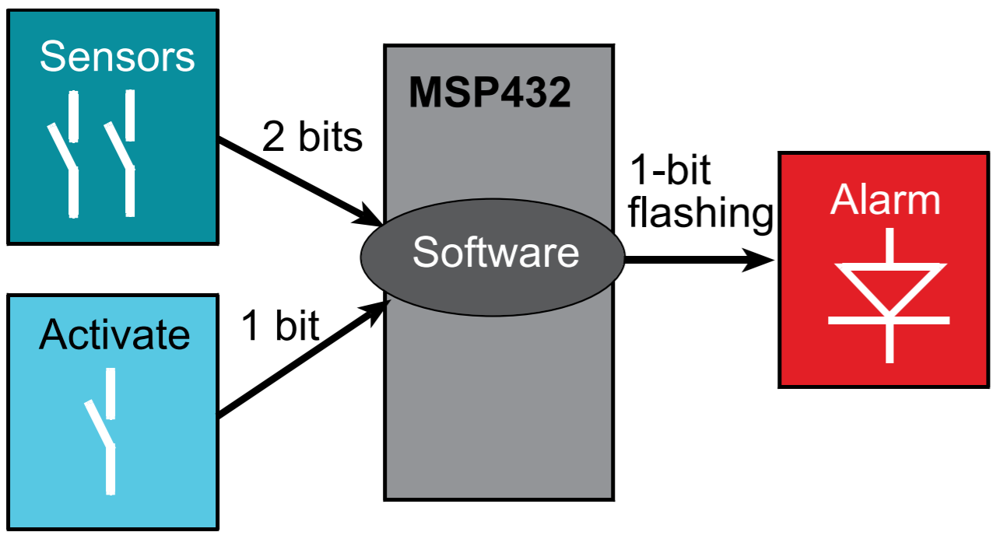
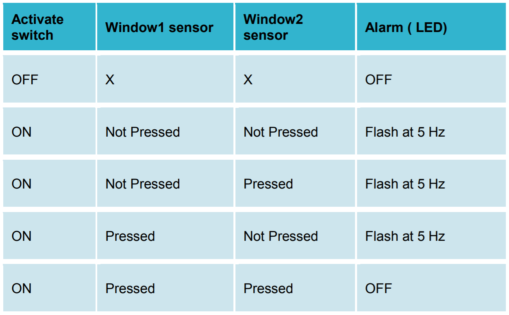

🔬 Lab 8 I/O Interface#
📌 Objectives#
Students should be able to interface switches and LEDs to a microcontroller using TI’s LaunchPad development board.
Students should be able to write assembly code to configure switches as inputs and LEDs as outputs.
Note
There are two ways to write error-free programs; only the third one works. -Alan J. Perlis
📜 Synopsis#
In this lab you will design, develop, and test a window intruder detector alarm system. The block diagram of the system is shown below.
{kind=link}
Our window intruder detector alarm system is equipped with three inputs and one output. The inputs consist of three switches that are implemented with positive logic. The rightmost bump switch, which is called Activate, serves as the arm/disarm control. The two left bump switches connected to P4.7 and P4.6 are two window sensors, which are named Window1 and Window2 respectively. When Activate is pressed or true, the security system is activated. When Activate is not pressed or false, the system is deactivated, meaning the alarm will be OFF regardless of the state of the window sensors. The window is in a secure position when the window sensor is pressed or true. It is unsafe if either window sensor is not pressed. The output consists of an LED called Alarm that is implemented in positive logic. The LED flashes at 1 Hz (on for 50 ms, off for 50 ms) to signify the unsafe condition when either Window1 or Window2 detects an intruder based on the truth table below.
{kind=link}
💻 Procedure#
Setup#
Connect the LaunchPad to your computer via the provided USB cable.
Open Code Composer Studio (CCS) and select your starter workspace.
Ensure your Project Explorer is open on the left of the CCS screen. Otherwise, select View > Project Explorer.
Open the
Lab08_InterfacingIOproject by double-clicking it.Open the
Lab08_InterfacingIOmain.cfile by double-clicking it.
Implement the bump sensors#
Please read
Bump.hin theincfolder. You can also open it by right-clicking#include "…/inc/Bump.h"and selecting Open Declaration (F3).Complete
Bump_Init()andBump_Read()inBump.c.In Homework 8, you already wrote the function to initialize the bump sensors,
Bump_Init(). This function sets the appropriate port pins and enables internal resistors as pull-up resistors (active low).A second function,
Bump_Read(), reads the switches and returns one 8-bit result.The bump sensors are active-low, which means that when pressed they will switch from a 1 to a 0.
We want the output of our
Bump_Read()function to return a 1 when pressed, so you should invert the result before returning from the function.The bump sensors are connected to P4.7-P4.5, P4.3, P4.2, and P4.0.
If the two middle sensors are pressed, P4 will be 0b110x01x1, where x denotes
unknown (don’t care). Since it is negative logic, 0 means pressed and 1 means not pressed.The function returns an 8-bit unsigned integer. The first 6 bits (Bit0 - Bit5) of the return value must be the sensor output with positive logic. If the two middle sensors are pressed, the function must return 0b00001100.
In the function, you need to invert the sensor reading and perform select-shift-combine operations.
Q&A
Q: I don’t understand what/why we are shifting in Bump Read.
A: If you look in the comments for Bump_Init, the switches are mapped to pins 7-5, 3-2, and 0. You want to move everything, so it’s in bits 5-0.
Demo
Program8_1()testing the bump switches as shown below.
{kind=link}
Warning
If you want to give a video demo, use a screen recorder such as ScreenToGif or OBS Studio - they are free. Do not record your screen with a mobile device or a webcam. If you do so, you will get -10 points.
Demo Program8_2() with Moku:Go Oscilloscope#
Warning
Do not use the alligator clip to clamp the ground pin. If the alligator clip touches another pin on your LaunchPad, it may fry your LaunchPad.
Turn off your LaunchPad. Do not connect an oscilloscope probe to your LaunchPad while it is on.
Connect an oscilloscope probe to your LaunchPad as shown below. Use a jumper wire to connect the ground signal.
{kind=link}
Steps to use the Oscilloscope
We will now utilize Moku:Go Oscilloscope to observe the signal sent over P1.0 to determine if the LED is blinking at a rate of 1 Hz.
Run
Program8_2()to testLED_Oscillateyou implemented in Homework 8.Your Moku:Go will turn on automatically when connected to power. Connect the magnetic power supply to the magnetic power adapter. To turn off Moku:Go, unplug the power source.
The LED on Moku:Go is off when the power is disconnected. While Moku:Go is booting, the LED is orange. When Moku:Go is ready, the LED becomes green.
Connect the Moku:Go to your computer via a USB-C cable.
Once you have connected your Moku:Go to your computer, you can start using your device with the Moku:Go App. Launch the Moku:Go App on your computer. The Moku:Go device connected by USB will appear on the
Select your devicepage as shown below.Double click your Moku:Go tile to start using your device. The default name of your Moku:Go is
Moku-######, where######is the 6-digit serial number printed on the bottom of the device.On the
Select your instrumentmenu, double click Oscilloscope.Change the voltage level and time span by scrolling your mouse up or down as shown below. The time span should be at least 4 seconds or you need to have at least 5 periods (repeating signals) on your window.
Ensure the trigger mode is
Normal, the type isEdge, and the level is at least 3 V.Click the Ruler button (Measurement) to measure the frequency. You can measure the period instead of the frequency if you prefer.
{kind=link}
To get the frequency of your signal to be 1 Hz (period = 1 sec), you need to adjust your
DELAYinLEDs.asm. No trial and error is needed for this. You can easily find the correct value ofDELAYusing a simple ratio.Click the Cloud button (Export Data) and export the screenshot to your local folder.
Submit the screenshot in Gradescope.
Implement alarm algorithm in Program8_3()#
Within Lab08_LED_Switchesmain.c, use
Program8_3()to implement the alarm algorithm discussed in Synopsis and depicted in the block diagram below.
{kind=link}
The system starts with the LED off.
Wait about 100 ms.
Look at the three bump switches; if
Activateis pressed and one or bothWindow1andWindow2are not pressed, then toggle the LED else turn the LED off.You must use the functions in
LED.asm.Demo
Program8_3()
Video Credit: C24 Eric DeLuga
🚚 Deliverables#
Deliverable 1#
[4 Points] Demo
Program8_1()testing the bump switches.
Deliverable 2#
[4 Points] Submit a Moku:Go screenshot showing your LED blinks at 1 Hz.
Deliverable 3#
[4 Points] Demo
Program8_3()showing the alarm system works properly.
Deliverable 4#
[7.5 Points] Push your code to your repository using git. Please write comments in your code.
Warning
Your code must be compilable. If your code throws any compile errors, you will get a grade of 0 for the coding part.
This lab has been adapted from TI-RSLK MAX Solderless Maze Edition Curriculum